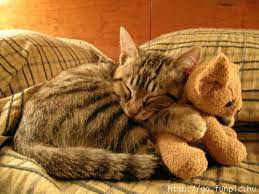
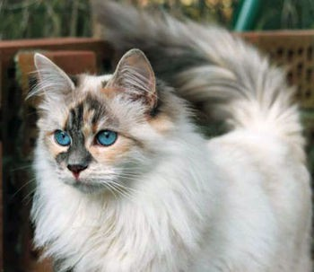

Megpróbálok a lehető legtöbb mindenre kitérni, azonban nem fogunk átvenni mindent. A következő dolgokat fogom leírni: Etetés, komfort, ápolás.
Etetés
Saját tapasztalatból, napi háromszor lehet nekik ételt adni. Sajnos konkrét számot nem tudok mondani mivel minden macskatipusnál másmilyen.Azonban háromnál többször nem szabad nekik adni napi szinten, és az is fontos hogy ne sajnáljuk azt az 500 ft-ot, azért, hogy megvegyük a jobb minőségű tápot.
A tápanyag értékről függhet a cicád bundája, egészsége, és hangulata is.
Otthoni kosztot is lehet nekik adni, azonban vannak amik tiltva vannak:
- 1. Tej: Hasmenéshez vezethet, csakis minimális adagot kaphatnak.
- 2. Nyers tojás, fertőzés veszélyes.
- 3. Máj, alkalmi fogyasztás nem okoz gondot, nagy mennyiségben mérgezést okoz.
- 4. Hagymák, kis mennyiségben is veszélyesek a macskákra, vérszegénységet okoz.
- 5. Gombafélék, akár halált is okozhat.
- 6. Alkohol, kómához vezet, akár halálhoz is.
- 7. Tonhal, alultpáláltsághoz vezethet.
- 8. Szőlő és Mazsola, vesekárosodást okozhat.
- 9. Koffein, nagy mennyiségben halált okozhat.
- 10. Csokoládé, cukrok, rágó, szivritmus zavart és halált is okoz.
- 11. Nyesedék és csontok, A zsír emésztési gondokat okozhat. A csontok pedig fulladást.

Komfort
 A cicák néha bonyolultak tudnak lenni. Vehetsz neki akár egy 30 ezer forintos macskabútort is, nem fogja használni. Csak a legelsőt fogja használni, főleg hogy ha az egy ágyikó! Ezért ezzel óvatosan.A szag és a szokás miatt mindig oda megy ahol a legeleszőr aludt el. Lehet ez egy kosárka egy párnával benne, vagy bármi más is.
Onnantól kezdve az lesz a számukra legkényelmesebb hely, ami biztonságot nyújt nekik. Minden macskának megvan a saját furcsasága ezen a téren.
A mi macskánk mikor megijed, akkor egy kosárkába bújik el mindig, és ott is alszik. Az neki a "nyugalom" helye. Fontos hogy ezt tiszteletbe tartsuk.
Vannak kivételek mikor átmennek az új ágyikóba, azokban a kivételes esetekben ha az előző tönkrement.
Ápolás
 Ez szigorúan macskafajtától függ, ezért itt több mindenre is kifogok térni.Egy hosszúszőrű macskát szigorúan fésülni kell egy bizonyos rendszerességgel, ugyanis ha ezt kihagyjuk akkor macskaszőrös lesz minden!
- A szoba minden eggyes része
- A ruhák a földön amikre ráfeküdnek majd elalszanak
- Az ágy amin játszani szoktak és tisztálkodni
- Akár az ételek is amikbe beleragadhat, az egész konyha, ami nagyon zavaró lehet.